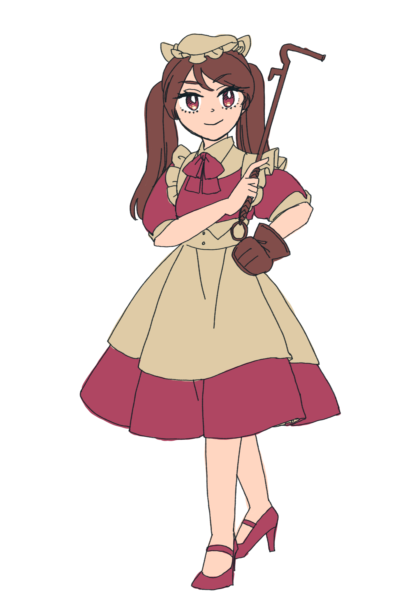
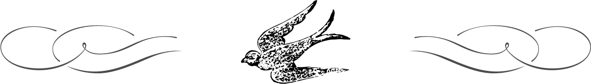
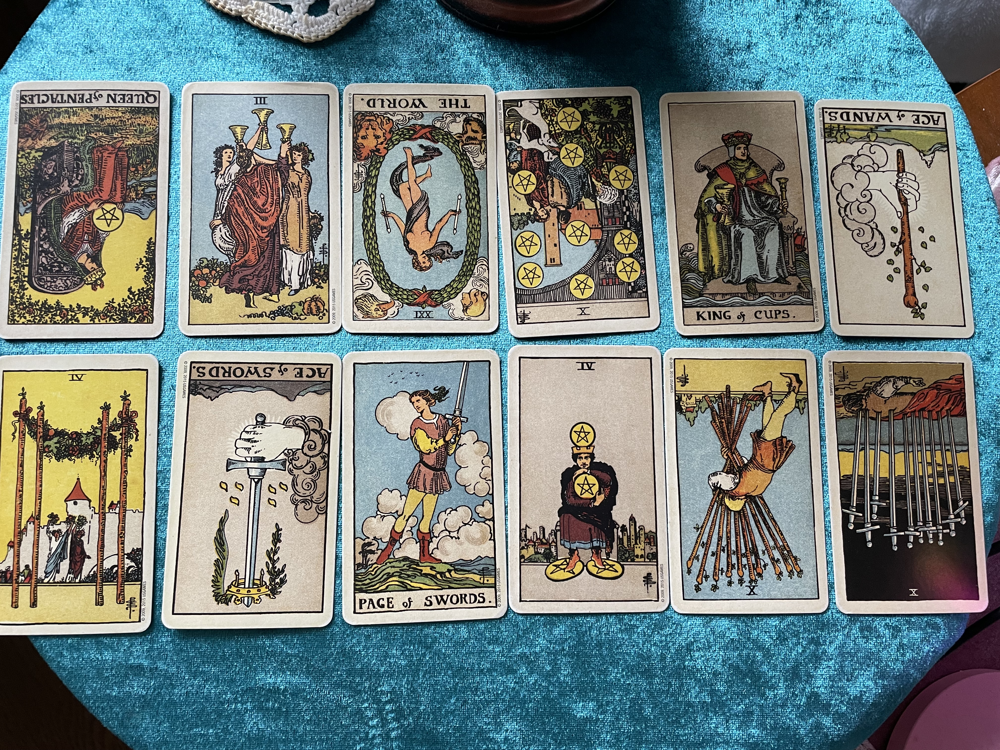

2027年の星占い



THE YEAR OF STARS IN 2027
はじめに―この冊子の使い方

この冊子は、あなただけの年間運勢予測を書き下ろし、目標や記録を自分で書き込めるワークシートやメモをつけた、あなた専用の「2027年の友」です。
ぜひ、コンビニなどで小冊子印刷して、書き込みながらお使いください。（用紙サイズはB5、冊子にしてB6サイズにするとちょうどいいです）
占いで一年の予測をたてるだけでなく、年始に考えたことを年末の自分に伝えておいたり、やりたいことややめたいことの整理などにお使いください。
とくに、12ヶ月のタロット予報と、実際にその月何が起こったかは書きとめておくとおもしろいものです。
巻末には、あなたの担当メイドさん（12星座のうち太陽がある星座のメイドさん）からのお言葉が収められています。ときどき見返して、お守りにしてください。

 1
1
2027年のはじめからおわりまでに
 2027年をどんなふうに過ごしたいか、年の初めに今の自分をひとことでいうと今年はじめたいこと今年やめたいこと2027年末の自分へ、伝言と覚え書き
2027年をどんなふうに過ごしたいか、年の初めに今の自分をひとことでいうと今年はじめたいこと今年やめたいこと2027年末の自分へ、伝言と覚え書き2027年の誕生日から1年間のテーマ
（個別鑑定の本文）
2027年の概観
（個別鑑定の本文）
大きな決断や行動に向かない時期
（個別鑑定の本文）
12ヶ月のタロット予報

1月：占い本文
2月：占い本文
3月：占い本文
4月：占い本文
5月：占い本文
6月：占い本文
7月：占い本文
8月：占い本文
9月：占い本文
10月：占い本文
11月：占い本文
12月：占い本文
2027年の記録
8
Presented by Hatoi Botan
2026-2027